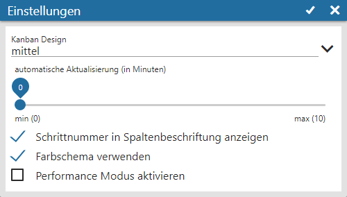

Durch Anwahl des Buttons "Einstellungen" können individuelle Einstellung für die Anzeige getroffenen werden.

Ø Kanban Design
Mit Hilfe dieser Auswahl kann die Breite der Spalten in der Schrittübersicht definiert werden.
Ø automatische Aktualisierung (in Minuten)
An dieser Stelle kann definiert werden, ob sich der Inhalt des Kanban automatisch aktualisieren soll. Mit der Einstellung "0" findet eine Aktualisierung nur statt, wenn ein Schritt über den Kanban geschrieben wird.
Ø Schrittnummer in Spaltenbeschriftung anzeigen
Durch Aktivierung dieser Option wird die Schrittnummer in der Spaltenbeschriftung des CRM Kanbans angezeigt.
Ø Farbschema verwenden
Mit Hilfe dieser Option werden die Farben aus den CRM-Fällen bzw. dem Workflow Editor zur Anzeige im Kanban verwendet.
Ø Performance Modus aktiveren
Im Standard findet nach jedem Drag & Drop eine komplette Aktualisierung des CRM Kanban statt, wodurch z.B. neue CRM Fälle direkt angezeigt werden würden. Durch Aktivierung des sogenannten "Performance Modus" kann diese wiederkehrende Aktualisierung deaktiviert werden.
Buttons
Ø Ok
Durch Anwahl des Buttons "Ok" bzw. des Taste F5 werden die Einstellungen gespeichert, angewendet und das Fenster geschlossen.
Hinweis
Die Speicherung findet benutzerspezifisch, aber workflowunabhängig, statt.
Ø Ende
Durch Anwahl des Buttons "Ende" bzw. der Taste ESC wird das Einstellungsfenster geschlossen und nicht gespeicherte Änderungen verworfen.